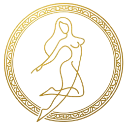

Ellas habitan el grande y sagrado monte Helicón, y danzan en torno a la fuente violácea. De su memoria nacen los nombres de esta enciclopedia: ideas con figura de mujer, no fuerzas de la naturaleza.

DAIMONAS
Teogonía de Hesíodo · Enciclopedia de daimonas
«Con las Musas heliconias comencemos el canto: ellas habitan el grande y sagrado monte Helicón.»
HESÍODO · TEOGONÍA
Fondos verdaderamente aleatorios (Picsum) buscados en el momento al abrir cada ficha. Logo local. Retratos en /images/.
G. F. Handel
MEMORICE
GLOSARIO
DAIMONFigura divina menor o espíritu. Aquí nombra una idea, no un demonio.
TEOGONÍAPoema de Hesíodo sobre el nacimiento de los dioses.
TITANIDEHija de Urano y Gea, de la generación anterior a los Olímpicos.
HORAUna de las diosas del orden del año y de la ciudad. En Hesíodo son Eunomía, Dike e Irene.
CÁRITESLas Gracias. El grupo antiguo es Aglaya, Eufrosina y Talía. Otro relato llama Cárites jóvenes a Euclea, Eutenia, Eufeme y Filofrósine.
SÉQUITOEl grupo que acompaña a un dios en el mito o en el culto.
POLISLa ciudad griega, con sus leyes, fiestas y altares.
OCEÁNIDEHija de Océano y Tetis. Algunas personificaciones entran en esa lista.
QUIZ
Elige el nombre del concepto.
ACLARACIONES
QUÉ ES UN DAIMONEn griego, daimon no significa demonio. Es un espíritu o una figura divina menor. En esta página son sobre todo nombres de ideas: la justicia, la paz, el olvido, la victoria.
LA TEOGONÍAEs un poema de Hesíodo, hacia el siglo VIII a. C. Cuenta cómo nacen los dioses, desde el Caos y Gea hasta Zeus. Muchas de estas figuras aparecen ahí, en listas de hijos de la Noche, de Zeus o de las Titanides. Otras llegan en Pausanias, Platón o en cultos de la ciudad.
QUÉ ENTRA Y QUÉ NOLa enciclopedia se limita a daimonas de conceptos abstractos. No incluye fuerzas de la naturaleza, como el viento o el río, ni espíritus nocivos de castigo o enfermedad. Tampoco sustituye a los grandes dioses.
TITANES, DIOSES Y DAIMONASLos Titanes y las Titanides son la generación anterior a los Olímpicos: Febe, Mnemósine, Temis, Tea. Los dioses olímpicos, como Zeus o Atenea, tienen mitos largos y templos grandes. Una daimona suele ser una idea con nombre. Las Musas son hijas de Mnemósine y Zeus: no son Titanides ni daimonas de una sola virtud.
POR QUÉ IMPORTA HOYEstas palabras siguen en el idioma: euforia, higiene, democracia, némesis. Verlas como figuras ayuda a leer el poema y a notar que los griegos daban nombre a ideas que nosotros también usamos, como la tregua, la confianza o la medida.